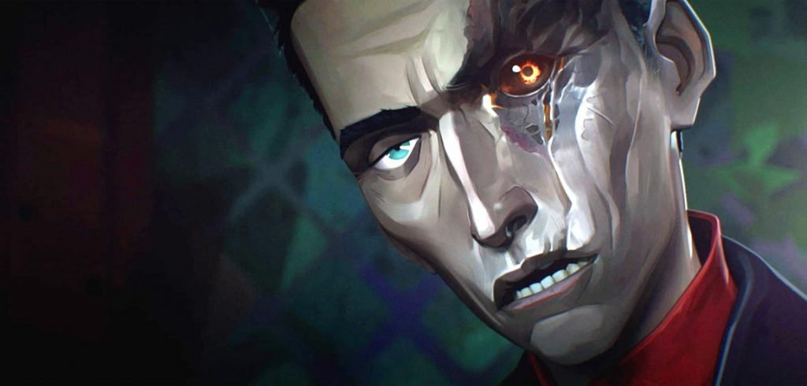

About Silco
Silco is a key antagonist in Arcane, the Netflix series set in the League of Legends universe. A revolutionary from Zaun, he seeks independence from Piltover by any means, including violence and the use of the dangerous substance Shimmer. Once a close friend of Vander, their fallout led to a bitter rivalry. Silco becomes a father figure to Jinx, raising her in the chaos he helped create. Ruthless yet emotionally complex, Silco is a tragic leader driven by vision, pain, and sacrifice.
Jinx - The loose Cannon
Silco Characteristics
- Strategic: Silco is a master manipulator and long-term thinker. He builds power not just with brute force, but through calculated moves and alliances.
- Charismatic Leader: He commands loyalty from his followers in Zaun through vision and conviction. Many see him as the only hope for Zaun’s independence.
- Ruthless: Silco will do whatever it takes to achieve his goals — including betrayal, violence, and sacrifice. He believes the end justifies the means.
- Paternal: His bond with Jinx reveals a softer side. Despite his cold demeanor, he shows genuine love and protectiveness toward her, often putting her above his ambitions.
- Ideologically Driven: Silco is not motivated by greed or chaos, but by a burning desire for Zaun’s freedom. His revolutionary ideals make him a complex, morally gray figure.
- Traumatized: His past betrayal by Vander left deep emotional and physical scars, shaping his worldview and fueling his distrust and aggression.